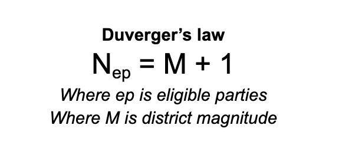

Duverger's Law reveals how voters adapt to electoral rules, shaping their choices in decisive ways.
By virtue of this law, plurality-rule elections (like those in the United States and the United Kingdom) tend to lead a voter to be tactical when casting their ballot, while in a proportional representation system like in the Netherlands, a person can have more confidence that their vote may help their preferred candidate get elected.
Key Elements of Duverger's Law
Before diving into Duverger's Law, let's break down the key concepts that unlock its deeper meaning.
A district: This refers to an area, geographical or otherwise, where an election takes place to appoint a representative or representatives
District magnitude: This refers to the number of representatives which are elected in any given district. The number could be as low as one, as in First-Past-the-Post, or several individuals or parties, such as in proportional representation.
District size: Though not essential for understanding Duverger's law, the size of a district can refer to how many individuals vote for representation within. In the UK, a constituency (a district) is generally composed of about 70,000 people who could vote.
Rational voting: Key to understanding this topic is the narrow definition of rationalism. More on the types of rationalism later, but for now we just need to assume that there is such a thing as a rational voter.

The rational voter
Although Duverger's law can be used to explain the number of political parties which can win in a given district, it is important to remember that it is ultimately a way to understand how voters may decide whom to vote for.
A limitation of this theory, which we will come to later, is that it assumes that voters will cast their ballot in a rational manner. Rational, in this sense, means that the voters have a perfect understanding of their options, a perfect understanding of which option is best for them, and that they vote in their best interest. Let's break this down:
Trait of a 'rational' voter
Meaning
A perfect understanding of their options
This means that a voter knows everything their is to know about the candidates for election in a given district. Imagine a voter who has read every news article, seen every debate, read every manifesto, knows everything about the candidates — no small feat, indeed!!
A perfect understanding of their preferrences
This means that a voter knows exactly which candidate they prefer. This is based on the voter's own interests and assumes they are totally aware of what is best for them. Imagine a voter who is certain that one candidate may make them richer, or that another one aligns perfectly with their views on a particular topic of interest which is of utmost importance to them.
Voting in their best interests
Finally, the Duvergerian model assumes that voters will be well-informed enough to take the most rational choice when voting. Consider the imaginary voter, he or she will have the electoral calculus they need, i.e., an understanding of the electoral system, and will use that knowledge to cast their vote totally rationally
How does a rational voter act in any given district?
Now that we have some basic definitions, we can tie them together to create a model for how voters behave under different electoral conditions. You may have heard the term strategic voting, but what does it actually mean?. Learn more below:
Strategic voting occurs when voters select a candidate they believe has a better chance of winning, even if that candidate isn't their first choice. This behavior often happens in plurality-rule systems where voters may fear "wasting" their vote on a less popular candidate.
Let's unpick stategic voting. Imagine a rational voter is presented with the following choices:
Party
Alignment to voter's preference (1 to 100)
Discussion
Party A
10
With a score of just 10, this party choice is only weakly aligned to the voter's preference.
Party B
40
With a score of 40, this party is moderately aligned to the voter's preferred choice.
Party C
50
Of the three options available to the voter, this party is most strongly aligned to the voter's preference.
Imagine you are this voter, if you had one vote, who would you choose? Now imagine having two votes at your disposal—how would your strategy change?
The rational voter's choice is clear - vote for the candidate or candidates that most align with your choices! In the above case, with one vote, Party C is the obvious choice. But Understanding Duverger's law requires another element: history. Continue to the next page to find out more.
Conclusion
So far we have outlined most of the basic building blocks required to understand Duverger's law. We understand what a district is, including its traits, and the concept of the rational voter. Now we will make it more applicable to our world by factoring in the role of historical information into rational decision making.